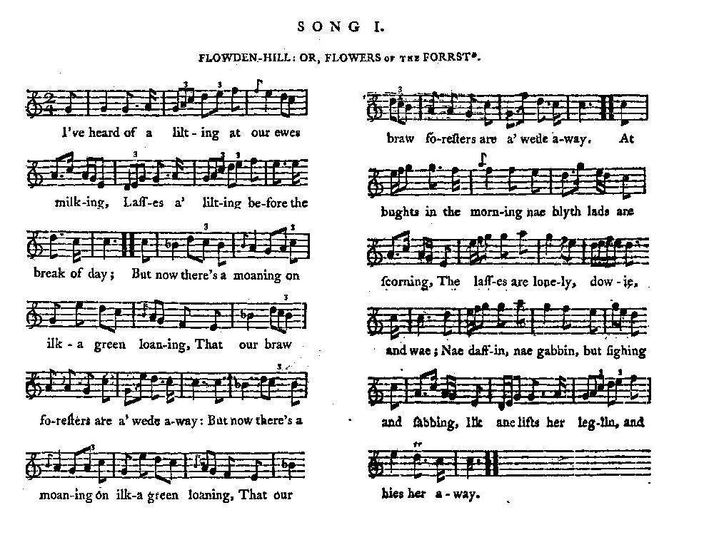

The Flowers of the Forest
Les Fleurs de la forêt
From
Joseph Ritson's
"Scotish Songs", Class III, N°33
Ascribed to Alison Rutherford, Lady Cockburn (1714 - 1794)
Tune - Mélodie
"The Flowers of the Forest"
from Ritson's "Scotish Songs" 2nd Volume, page 1, 1794 N°63
Sequenced by Christian Souchon

|
To the tune:
The chapter "Culloden" of the present collection concludes with this song on the authority of Joseph Ritson who cautiously remarks in his "Scotish Songs": "This song is suspected to allude to the consequences of 1715 or 1745." This melody, also called "The Liltin", appears earliest under the title "the Flowres of the Forrest in the John Skene of Halyards Manuscript", a lute manuscript of c. 1615-25 , though it may have been composed earlier. It is throughout a pentatonic melody , but for two dramatic flattened notes. Ritson says that “the tune Flowden Hill or The Flowers of the Forest, is one of the most beautiful Scottish melodies now extant, and, if of the age supposed, must be considered as the most ancient." |
A propos de la mélodie:
Le chapitre "Culloden" du présent recueil s'achève par ce chant, suivant l'avis autorisé de Joseph Ritson qui remarque, prudemment , dans ses "Chants éccossais": "On peut supposer que ce chant fait allusion aux conséquences des événements de 1715 ou de 1745". Cette mélodie, qu'on appelle aussi "La cadence", est consignée, pour la première fois, sous le titre "Les fleurs de la forêt" dans le Manuscrit de John Skene de Haylyards pour le luth, de 1615-1625 environ, bien qu'elle ait pu être composée plus tôt. Elle est entièrement pentatonique , sauf deux notes mises en relief par une altération. Ritson indique que "la mélodie 'Flowden Hill' ou 'Les fleurs de la forêt' est l'une des plus belles mélodies écossaises qui nous soit parvenue et si elle a bien l'âge qu'on lui suppose, c'est aussi la plus ancienne." . |
|
To the lyrics:
In Ritson's book, the tune accompanies the song N°I of Class III, "Flowden Hill", commemorating the battle of Flodden, fought on 9th September 1513 between James IV, king of Scots and Thomas Howard, earl of Surrey, whereby the king and the great part of his army, the flower of the Scottish youth, were left dead on the field. Flodden is a hill in Northumberland. Both texts are taken from David Herd's "Ancient and Modern Scots Songs, &c", 1769 and 1776 editions. "Flowden Hill" is the first set of words added to the tune by Jean Elliot in 1756. The poem begins thus: I've heard the lilting, at the yowe-milking, Lassies a-lilting before dawn o' day; But now they are moaning on ilka green loaning; "The Flowers of the Forest are a' wede away". This poem was paraphrased in the second song that several authors ascribe to Alison Rutherford, Lady Cockburn (1714 - 1794) who was a famous society hostess and an obscure poet. She was by no means a Jacobite and, during the siege of Edinburgh Castle in 1745, she was intercepted in a carriage carrying a satiric vamp on Prince Charles, but was allowed to go with a mere warning. She is said to have written the present version of the "Flowers of the Forest" in 1765, to which she was allegedly inspired, not by the Sheriffmuir or Culloden catastrophes, but, in spite of the floral reference, by the bankruptcy of several gentlemen in her native Selkirkshire. However, later biographers consider it more probable that it was written on the departure of her lover, a certain John Aikman. The shrewd Joseph Ritson apparently did not know of these references, but surmised that these poems were not of great antiquity. Regarding the words of "Flodden Hills" he says: "Its antiquity, however, has been called in question; and the fact is, that no copy, printed or manuscript, so old as the beginning of present (eighteenth) century, can be now produced.” Playing “The Flowers of the Forest” has been a tradition at Scottish funerals (especially military, where it is often rendered by a lone bagpiper). |
A propos du texte:
Dans l'ouvrage de Ritson, la présente mélodie accompagne le chant N°I de la classe III, "Flowden Hill", lequel commémore la bataille de Flodden, disputée le 9 septembre 1513 entre Jacques IV, roi d'Ecosse et Thomas Howard, comte de Surrey. Elle vit le roi se faire massacrer avec l'essentiel de son armée, la fleur de la jeunesse écossaise. Flodden est une colline dans le Northumberland. Les deux textes sont tirés des "Chants écossais anciens et modernes, etc." de David Herd, éditions de 1769 et 1776. "Flowden Hill" est le premier poème écrit sur cette mélodie et on le doit à Jeanne Elliot qui le composa en 1756. Il commence ainsi: La cadence légère du chant de nos bergères, Qui s'affairaient à traire à la pointe du jour, Désormais a fait place à cette plainte lasse: "Les fleurs de la forêt sont fanées pour toujours." Le présent second chant est calqué sur le premier. On l'attribue généralement à Alison Rutherford, épouse de Lord Cockburn (1714 - 1794) qui fut une femme du monde fameuse, doublée d'une obscure poétesse. Loin d'être Jacobite, elle fut arrêtée, lors du siège du château d'Edimbourg, alors qu'elle avait dans sa voiture un poème satirique improvisé contre le Prince Charles, mais elle en fut quitte pour la peur et un avertissement. On prétend qu'elle rédigea cette version des "Fleurs de la Forêt" en 1765, non pas à propos de Sheriffmuir ou de Culloden, mais, sans lien avec la référence florale, pour déplorer une série de faillites qui avaient frappé plusieurs messieurs de son Selkirk natal. D'autres biographes considèrent, depuis, qu'il s'agirait plus probablement du départ de son amant, un certain John Aikman. Le sagace Joseph Ritson ne connaissait pas, à l'évidence, ces références, mais était certain que ces poèmes n'étaient pas anciens. A propos de "Flodden Hills" il dit: "L'ancienneté de ce morceau est loin d'être établie. Il est de fait qu'aucun exemplaire imprimé ou manuscrit, antérieur au début de ce siècle (le XVIIIème), n'a pu être produit jusqu'à présent." Jouer "Les fleurs de la forêt" est un rite indissociable des grandes cérémonies funèbres en Ecosse, en particulier militaires, où la mélodie est exécutée par une cornemuse en solo. |

|
THE FLOWERS OF THE FOREST
1. I've seen the smiling Of Fortune beguiling, I've felt all its favours and found its decay. Sweet was its blessing, Kind its caressing, But now 'tis fled, - fled far away. (twice) I've seen the forest Adorn'd the foremost, With flowers of the fairest, most pleasant and gay. Sae bonny was their blooming Their scent the air perfuming; But now they are wither'd and weeded away. 2. I've seen the morning With gold the hills adorning, And loud tempest storming before the midday. I've seen Tweed's silver streams Shining in the funny beams, Grow drumly and dark as he row'd on his way. (twice) O fickle Fortune! Why this cruel sporting? O why still perplex us, poor sons of a day? Nae mair your smiles can cheer me, Nae mair your frowns can sear me, For the flowers of the forest are withered away. Source: "Scotish Songs" collected by Joseph Ritson, Volume II printed in London for J. Johnson in 1794. |
LES FLEURS DE LA FORET
1. O Fortune changeante, Je t'ai vue souriante, Tu t'es montrée charmante, Et rude, tour à tour! Après tant de tendresse, D'enivrantes caresses, Tu me fuis O traitresse et me fuis pour toujours! (bis) La forêt fut parée, Sa beauté rehaussée Par ces fleurs parsemée, De plaisante gaîté. Mais leur teinte éclatante, Leur fragrance entêtante. O Fortune méchante, Sont fanées à jamais! 2. L'aube qui s'illumine Orne d'or les collines. La tempête fulmine lorsqu'approche midi. Et la Tweed argentée, Doucement éclairée, Tout en suivant son cours se trouble et s'assombrit. (bis) O Fortune inconstante, Que te voilà méchante! A quoi bon décevoir d'éphémères folies? Tes rires m'indiffèrent Comme tes airs sévères. Les fleurs de la forêt à jamais sont flétries! (Trad. Christian Souchon (c) 2010) |
"Flowers of the Forest played by the Scots Guard Bagpipes"